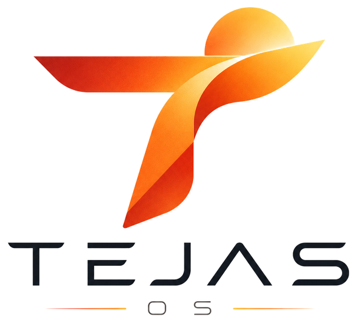

1
Install TEJAS
Trying TEJAS from a USB stick? Double-click Install TEJAS on the desktop to put it on this PC. It takes about 15 minutes.

Your new desktop is ready. Every app here is free and open source, with no trials, no ads and no account needed.
→Browse free appsTrying TEJAS from a USB stick? Double-click Install TEJAS on the desktop to put it on this PC. It takes about 15 minutes.
Click the TEJAS logo at the top left, or the grid button in the dock, to see every app. Press Meta to search.
Open Discover from the dock. Thousands of free apps install in one click and update by themselves.
Double-click any .exe or open Bridge from the dock. Most apps work; games with anti-cheat usually don't.
Right-click the desktop and choose Desktop and Wallpaper to pick Night, Morning, Noon, Dusk or Mint.
Security updates arrive through Discover until June 2030. Install them when the dock shows a badge.